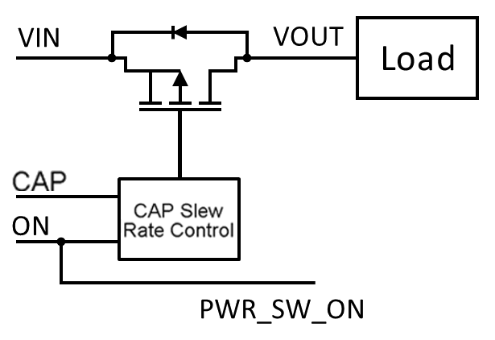

The SLG46118 includes a P-FET Power Switch designed for load switching applications. The P-FET Power Switch contains a 19mΩ RDSON, 2 A P-ch MOSFET with fixed slew rate control. The P-FET Power Switch can be controlled internally via the ON digital input of the P-FET Power Switch component in GreenPAK Designer, allowing the user to generate integrated mixed-signal control circuits, or externally via PWR_SW_ON (PIN 11).
The P-FET Power Switch need not be used in the same voltage domain as VDD. However, when VIN is not tied to VDD, using a large pull-down resistor on PWR_SW_ON (PIN 11) is recommended to prevent current from flowing through the P-FET Power Switch while the device is not powered.
The slew rate on the FET switch is user selectable by external capacitor connected to the CAP pin.
The SLG46118 has two forms of current limiting (Standard Current Limiting Mode and Short Circuit Current Limiting Mode). These modes are automatically switched depending on voltage inputs.

Figure 1. FET Power Switch with Slew Rate Control
Inputs: VIN0 and VIN1 must be connected to the same inputs. VOUT0 and VOUT1 are 1A channels each. They must be connected together to draw up to 2A.
For more information on Power Switch, refer to Datasheet section 18.0 Soft-Start FET Power Switch with Fixed Slew Rate Control
Control the FET with an external control PWR_SR_ON (PIN11) or use an internal ON connection
When configured to be controlled internally, PWR_SW_ON (PIN 11) is configured as Push-Pull output.
When configured for external control, PWR_SW_ON (PIN 11) is configured as Low voltage digital input (LVDI) and can be used as an input to other integrated components.